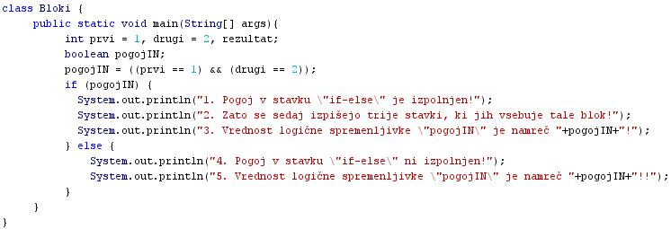
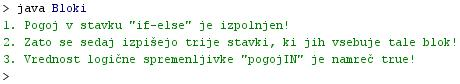

BLOKI UKAZOV ALI BLOKI STAVKOV
- Stavek v programskem jeziku je nekakšno zakljuèeno navodilo za izvedbo enega opravila.
- Vèasih se pokaže potreba po izvedbi veè opravil skupaj, sintaksa programa pa dopušèa zapis enega samega stavka.
- Tak primer potrebe po izvedbi veè stavkov na mestu, kjer lahko zapišemo le en stavek, so pogojni stavki, ki jih bomo spoznali kasneje.
- Veè stavkov, ki jih napišemo na mestu enega samega stavka, imenujemo blok stavkov.
- Blok stavkov imenujemo tudi blok ukazov ali sestavljeni stavek.
- Sestavljeni stavek je oznaèen z zavitima oklepajema.
- Zavita oklepaja oznaèujeta zaèetek in konec sestavljenega stavka.
VAJA 18:
- V okolju za pisanje izvorne kode v jeziku Java, za prevajanje in za interaktivno delo zapiši zgornji program "Bloki". Pomagaj si s sliko.
- Kodo lahko tudi kopiraš iz te datoteke in jo prilepiš v okolje, v katerem pišeš programèke. Pozor: koda, ki jo boš kopiral/a, vsebuje eno, dve, tri ali štiri napake. Èe želiš, da bo program deloval, moraš napake odkriti in jih odpraviti.
- Izvorno kodo shrani pod imenom "ImePriimek18.java". ImePriimek je seveda tvoje lastno ime in priimek.
- Datoteko "ImePriimek18.java" prevedi.
- Prevedeno datoteko zaženi, preveri rezultat v interaktivnem oknu in poklièi profesorja, da vidi rezultat.
1. Vprašanja:
1. Kaj je stavek v programskem jeziku?
2. Kaj je blok stavkov?
3. Kako blok stavkov imenujemo še drugaèe?
4. Kdaj moramo uporabiti blok stavkov?
5. Kako oznaèimo zaèetek in konec bloka stavkov?
6. Koliko blokov stavkov vsebuje program v tej uèni enoti?
7. Koliko stavkov vsebuje posamezni blok stavkov v primeru te uène enote?
8. Kateri blok stavkov se ob zagonu programa dejansko izvede. Ali se izvedejo vsi bloki?
9. Zapiši v zvezek, tisti stavek v kodi primera te uène enote, na katerega še nismo naleteli?
10. Kateri del tega novega in neznanega stavka se je ob zagonu izvršil?
2. Zapiši od ene do pet kljuènih besed, ki povzemajo vsebino te uène enote.
3. Povezave do dodatnih informacij.
Gradiva na spletnih straneh fakultete za matematiko in fiziko v Ljubljani.
Spletni priroènik proizvajalca programskega okolja Java. To je podjetje Sun.
|